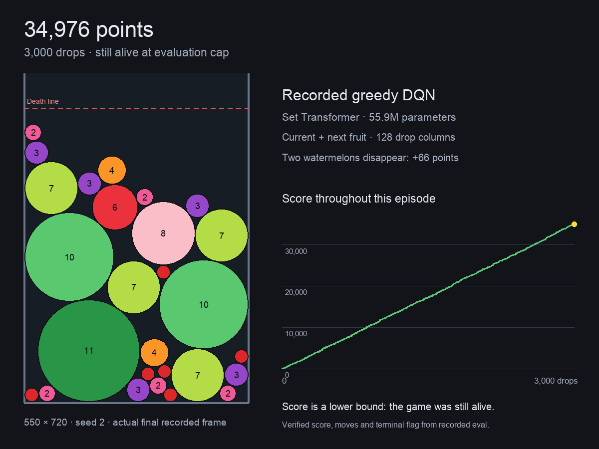
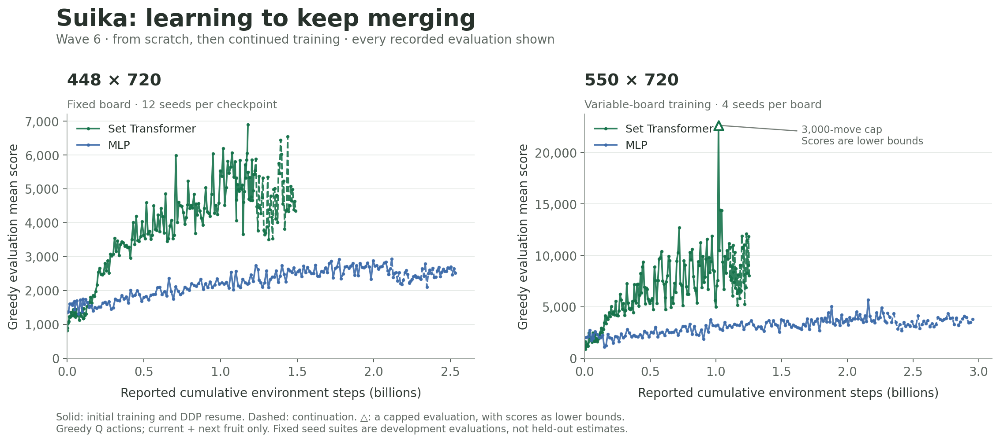
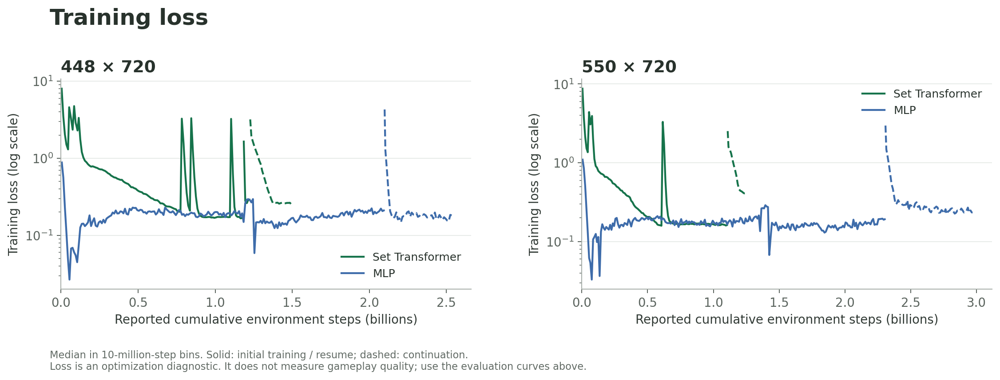

合成大西瓜 · 训练成果与纪录回放
55.9M 参数的 Set Transformer 学习 128 个落点的价值，直接用 DQN 贪心落子。完整自然结束对局达到 31,447 分；另有对局在 3,000 步评测上限时达到 34,976 分，仍存活。
纪录回放
点击分数打开逐帧回放；可拖动时间轴、选择任意落子，查看水果位置与实际落点。
| 对局 | 棋盘 · seed | 分数 | 落子数 | 记录内容 |
|---|---|---|---|---|
| 完整纪录局 | 550×720 · 1 | 31,447 | 2,683 | 自然结束；动作与物理帧 |
| 评测上限时仍存活 | 550×720 · 2 | ≥34,976 | 3,000 | 分数为下界；动作与物理帧 |
| 448 宽板纪录局 | 448×720 · 3 | 26,406 | 2,336 | 自然结束；动作与物理帧 |
| 完整 Q 值回放 | 550×720 · 22 | 22,661 | 2,013 | 每步 128 列 Q 值、动作与物理帧 |

这里是精选高分单局。720 是死亡线到地板的距离；550 与 448 是不同棋盘宽度。Wave6 使用 pymunk settle 步进，双西瓜消除并加 66 分，观察包含当前与下一个水果，未使用未来随机种子或搜索。
训练曲线
同棋盘分别展示 Set Transformer 和 MLP 的固定种子贪心评测，横轴为累计环境步数；虚线为后续训练，三角标出含截断对局的评测点。

| Set Transformer 最佳未截断开发评测 | 局数 | 平均分 | 中位数 |
|---|---|---|---|
448×720 · w6s_h720 grad 12712 | 12 | 6,898.75 | 4,973.5 |
550×720 · w6s_var grad 14893 | 4 | 14,422.25 | 13,566.5 |
种子套件在训练期间重复使用；表中是按均值选出的最佳 checkpoint，属于开发评测。后续训练的最后一次均值分别为 4,348.75 和 8,033.0；完整走势见图。
